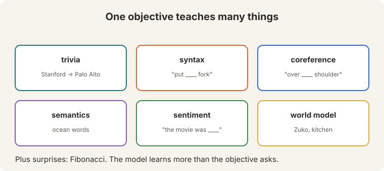
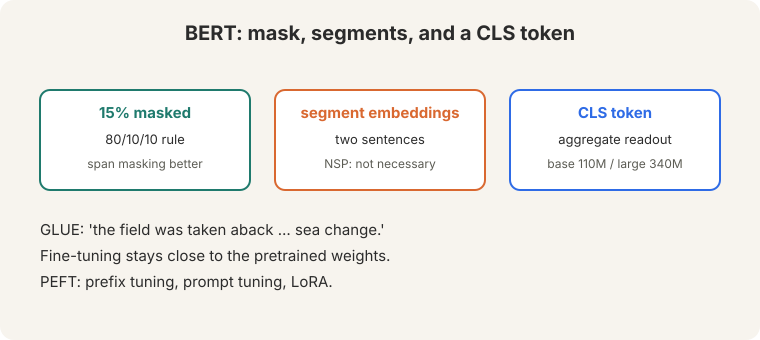
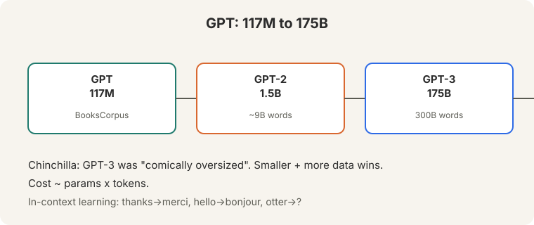
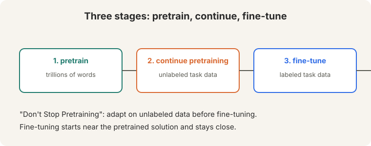
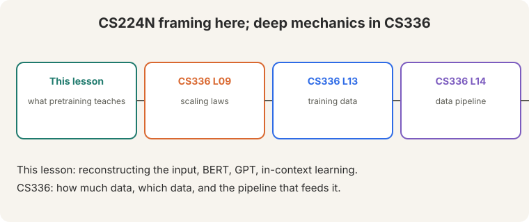

Lecture 9: Pretraining (Bridge)
Video blocked (ad-blocker or local file mode).
Watch on YouTubeVideo not loading? Watch on YouTube
Original lecture. Christopher Manning covers masked pretraining, BERT, GPT, and in-context learning.
Bridge lesson. This lecture teaches the CS224N framing: what pretraining teaches and how BERT and GPT use it. For deep mechanics, follow the links: CS336 L09 (scaling laws, Chinchilla), CS336 L13 (training data), CS336 L14 (the data pipeline). This lesson never re-explains what those cover.
How to read this lesson
This lesson has two levels. Level 1 (Core) defines pretraining and shows what it teaches. Level 2 (Deep) covers BERT, GPT, adaptation methods, and the three-stage recipe.
Level 1: Pretraining reconstructs the input
Pretraining trains on unlabeled text by reconstructing the input (19:43 ⏱19:43). Mask part of a sentence (19:53 ⏱19:53). Predict it back.

“Stanford University is located in [MASK] Alto” (20:15 ⏱20:15). The label is “Palo”. No human annotator needed. The data is free: at least five trillion words on the internet (33:07 ⏱33:07), against roughly a million labeled examples.
Level 1: What one objective teaches
One reconstruction objective teaches many things:

- Trivia. Stanford is in Palo Alto.
- Syntax. “put ____ fork”: the blank takes a preposition.
- Coreference. “over ____ shoulder”: whose shoulder.
- Semantics. Ocean words cluster together.
- Sentiment. “the movie was ____”: positive or negative.
- World models. Zuko in the kitchen: who is where.
- Surprises. Fibonacci sequences. The model learns more than the objective asks.
To fill blanks reliably across trillions of words, the model must learn grammar, facts, and reasoning patterns. The objective is simple. The data is rich. Rich data plus a hard prediction task forces broad knowledge. Grounding. The model learns word patterns, not the world. Its answers “always look very fluent” but are “frequently wrong” (62:18 ⏱62:18): a warning that survives into ChatGPT.
Level 2: BERT
BERT masks 15% of tokens (80/10/10 rule) and predicts them. It adds segment embeddings for sentence pairs (43:22 ⏱43:22) and a CLS token as an aggregate readout. Base: 110M parameters. Large: 340M. Trained on a few billion words.

The next-sentence prediction (NSP) task turned out to be “not really necessary” (45:09 ⏱45:09): it halves the effective context, and later work showed models were bad at it anyway. Span masking works better. RoBERTa removed NSP.
On GLUE, BERT was a shock: “the field was taken aback in a way that’s hard to describe… sea change” (49:35 ⏱49:35).
Fine-tuning stays close to the pretrained weights. PEFT methods adapt cheaply: prefix tuning, prompt tuning, low-rank updates (LoRA) (56:28 ⏱56:28).
Level 2: GPT and in-context learning
The GPT line scales the same idea autoregressively:

- GPT: 117M parameters, 768 hidden, BooksCorpus (64:11 ⏱64:11).
- GPT-2: 1.5B parameters, ~9B words.
- GPT-3: 175B parameters, 300B words.
In-context learning: give examples in the prompt, no weight updates. thanks -> merci, hello -> bonjour, otter -> ? (67:55 ⏱67:55). Chain of thought is a scratch pad: more compute at inference time (71:52 ⏱71:52).
Chinchilla corrected the sizing: GPT-3 was “comically oversized” (71:22 ⏱71:22). Smaller models on more data win. Cost is roughly params times tokens. Full treatment: CS336 L09.
Level 2: The three-stage recipe

- Pretrain on trillions of general words.
- Continue pretraining on unlabeled task data (“Don’t Stop Pretraining”).
- Fine-tune on labeled task data (26:02 ⏱26:02).
Each stage narrows the distribution. Fine-tuning starts near the pretrained solution and stays close to it.
The pretrained model knows general text, not your domain’s vocabulary and style. Continued pretraining on unlabeled domain text adapts the representations cheaply. Fine-tuning then needs fewer labels and generalizes better. When the task needs knowledge absent from the pretraining data, or when the fine-tuning data contradicts pretraining strongly. Also: fluent but wrong answers. Pretraining teaches form. It does not guarantee truth.
Recap: the whole lesson on one screen
Eight ideas carry this lecture. Read each card. Say the core sentence out loud. If you can, you own the lesson.
Mask part of a sentence. Predict it back. Trillions of unlabeled words versus a million labeled. The data is free.
Key: 19:43 ⏱19:43
Trivia, syntax, coreference, semantics, sentiment, world models. Plus surprises like Fibonacci.
Key: rich data, hard task
15% masking, segment embeddings, CLS readout. Base 110M, large 340M. NSP was not necessary. GLUE was a sea change.
Key: 49:35 ⏱49:35
117M to 1.5B to 175B. In-context learning: examples in the prompt, no weight updates. Chinchilla: smaller plus more data.
Key: comically oversized
General text, then unlabeled task text ("Don't Stop Pretraining"), then labels. Fine-tuning stays close to the start.
Key: narrow the distribution
Prefix tuning, prompt tuning, LoRA: low-rank updates. Full fine-tuning is the slider's far end.
Key: adapt, do not retrain
Answers "always look very fluent" and are "frequently wrong". Still true of ChatGPT. Pretraining teaches form, not truth.
Key: 62:18 ⏱62:18

Scaling laws (L09), training data (L13), data pipeline (L14). This lesson: the framing. CS336: the mechanics.
Key: bridge, not duplicate
Official sources and further reading
Official: - Lecture 9 video and transcript. - Devlin et al. (2019): BERT. - Brown et al. (2020): GPT-3 and in-context learning.
Further reading: - CS336 L09: Chinchilla and scaling laws in full. - CS336 L13: what goes into pretraining data. - Gururangan et al. (2020), “Don’t Stop Pretraining”: the continue-pretraining result.
Caveats from these sources. “Five trillion words” is the lecture’s estimate of internet text, not a measured count. “Frequently wrong” is an observed failure mode, not a rate.
Connections to the other courses
- This course: L08 provides the architecture. L10 adapts pretrained models (prompting, instruction tuning, RLHF). L12 trains them efficiently.
- CS336: L09 (scaling), L13 (data), L14 (pipeline) carry the deep mechanics.
- CS329H: preference modeling theory underlies the post-training of L10.
Pretraining cheatsheet. Objective: reconstruct masked input. Data: ~5T words vs ~1M labeled. Teaches: trivia, syntax, coreference, semantics, sentiment, world models. BERT: 15% mask, 80/10/10, segments, CLS, 110M/340M; NSP unnecessary; GLUE sea change. PEFT: prefix/prompt/LoRA. GPT: 117M -> 1.5B -> 175B. In-context: examples, no updates; CoT: scratch pad. Chinchilla: smaller + more data. Cost ~ params x tokens. Recipe: pretrain -> continue -> fine-tune. Warning: fluent but frequently wrong.
Reconstruct to learn. Mask, predict, repeat over trillions of words. One simple objective, many kinds of knowledge. Form is learned. Truth is not guaranteed.
Sources
- VIDEOLecture 9 video, Stanford Online YouTube
- NOTESOfficial subtitle transcript
- PAPERDevlin et al., BERT: Pre-training of Deep Bidirectional Transformers (2019)
- PAPERBrown et al., Language Models are Few-Shot Learners (2020)